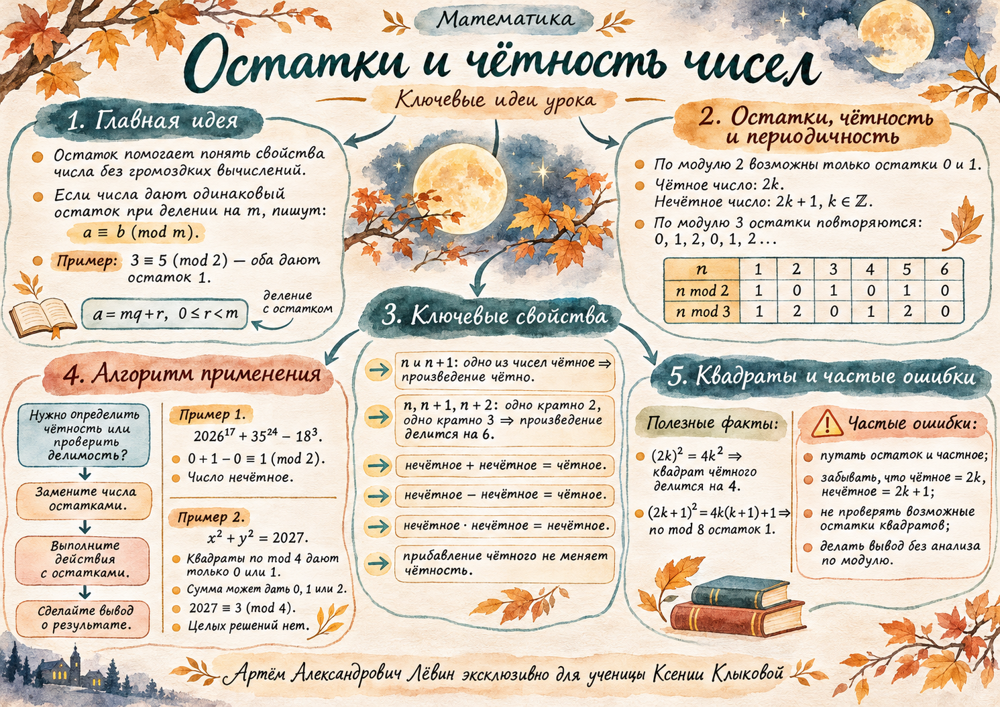

01 / Начальный инструмент
Деление с остатком
Каждое целое число можно единственным образом представить как произведение делителя и целого частного с добавлением остатка.
Например, 3 = 2 · 1 + 1 и 5 = 2 · 2 + 1. Остатки совпадают, поэтому числа сравнимы по модулю 2:
Периодичность
При делении на 2 возможны остатки 0 и 1; при делении на 3 — 0, 1, 2. Эти наборы повторяются, когда число увеличивается на модуль.
| Число | 0 | 1 | 2 | 3 | 4 | 5 | 6 | 7 | 8 | 9 |
|---|---|---|---|---|---|---|---|---|---|---|
| По 2 | 0 | 1 | 0 | 1 | 0 | 1 | 0 | 1 | 0 | 1 |
| По 3 | 0 | 1 | 2 | 0 | 1 | 2 | 0 | 1 | 2 | 0 |
250 = 3 · 83 + 1, поэтому остаток числа 250 при делении на 3 равен 1.
02 / Язык доказательства
Чётное и нечётное число
При делении на 2 остаток равен нулю.
При делении на 2 остаток равен единице.
Здесь k — любое целое число, включая ноль и отрицательные числа. Формула 2k − 1 тоже задаёт нечётное число.
4m + 3 = 2(2m + 1) + 1 — нечётно.
4m + 6 = 2(2m + 3) — чётно.
03 / Действия по модулю 2
Чётность суммы, разности и произведения
При сложении, вычитании и умножении достаточно работать с остатками. После операции приведите полученный остаток к допустимому диапазону.
| Действие | Результат | Остатки по 2 |
|---|---|---|
| Ч ± Ч | Ч | 0 ± 0 → 0 |
| Ч ± Н | Н | 0 ± 1 → 1 |
| Н ± Н | Ч | 1 ± 1 → 0 |
| Ч · любое | Ч | 0 · r → 0 |
| Н · Н | Н | 1 · 1 → 1 |
Пусть a = 2r + 1, b = 2s + 1. Тогда a + b = 2(r + s + 1), a − b = 2(r − s), ab = 2(2rs + r + s) + 1.
Сумма и разность чётны, произведение нечётно.
По модулю 2: 0 + 1 − 0 = 1. Значит, число нечётное.
04 / Делимость и инварианты
Последовательные числа и неизменность чётности
Из двух последовательных целых чисел одно обязательно чётное. Среди трёх последовательных целых чисел хотя бы одно кратно 2 и одно кратно 3.
Поскольку 2 и 3 взаимно просты, одновременная делимость на 2 и 3 гарантирует делимость на 6.
Начинаем с 7. Прибавляем 4 или вычитаем 6 сколько угодно раз. Все изменения чётны, исходное число нечётно. Получить 100 невозможно.
Количество чётных слагаемых
В 31 последовательном числе, начиная с чётного, ровно 16 чётных и 15 нечётных. Пример: от 2 до 32 включительно. Сумма нечётна: нечётных слагаемых 15.
05 / Новые остатки
Квадраты целых чисел
Квадрат чётного числа делится на 4:
Квадрат нечётного числа имеет вид:
Произведение k(k + 1) всегда чётно, поэтому 4k(k + 1) кратно 8.
06 / Признак невозможности
Может ли сумма квадратов быть равна 2027?
Каждый квадрат по модулю 4 даёт остаток 0 или 1. Значит, сумма двух квадратов может иметь остаток лишь 0, 1 или 2.
Число 2027 даёт остаток 3 при делении на 4. Возникает противоречие со всеми возможными остатками левой части.
Если остаток правой части равен 0, 1 или 2, этот признак сам по себе не гарантирует существования решений.
Краткая память
Постер урока
Пять ключевых ветвей: идея остатка, периодичность, чётность, алгоритм применения и квадраты.

07 / Путь А
10 задач на закрепление
Задания идут от вычисления остатков к доказательству отсутствия целочисленных решений. Раскройте ответ только после самостоятельной попытки.
01 · Таблица остатков
Заполните остатки при делении чисел 0, 1, 2, 3, 4, 5, 6, 7, 8 на 2 и 3.
Проверить ответ
По 2: 0, 1, 0, 1, 0, 1, 0, 1, 0. По 3: 0, 1, 2, 0, 1, 2, 0, 1, 2.
02 · Деление с остатком
Найдите остатки: а) 251 при делении на 3; б) 2031 при делении на 4.
Проверить ответ
а) 2; б) 3.
03 · Формула чётности
Определите чётность 4m + 3 и 4m + 6 при любом целом m. Обоснуйте формулами.
Проверить ответ
4m + 3 нечётно; 4m + 6 чётно.
04 · Три последовательных числа
Докажите, что произведение трёх последовательных целых чисел делится на 6.
Проверить ответ
Среди трёх есть кратное 2 и кратное 3; их произведение делится на 6.
05 · Два нечётных числа
Пусть a и b — нечётные целые. Докажите, что a + b и a − b чётны, а ab нечётно.
Проверить ответ
a + b — чётно; a − b — чётно; ab — нечётно.
06 · Большие степени
Не вычисляя степени, определите чётность числа 202817 + 4124 − 169.
Проверить ответ
Нечётное: 0 + 1 − 0 ≡ 1 (mod 2).
07 · Неизменность чётности
Начинают с числа 9 и сколько угодно раз прибавляют 4 или вычитают 6. Можно ли получить 100? Обоснуйте.
Проверить ответ
Нельзя: чётность исходного числа не меняется.
08 · Произведение двух скобок
Пусть a нечётно, а b чётно. Определите чётность (a + b)(a − b) и докажите.
Проверить ответ
Нечётное: оба множителя нечётны.
09 · 31 последовательное число
Рассмотрите 31 последовательное целое число, начиная с 4. Сколько среди них чётных и нечётных? Какова чётность их суммы?
Проверить ответ
16 чётных и 15 нечётных; сумма нечётна.
10 · Сумма квадратов
Докажите, что уравнение x2 + y2 = 2031 не имеет целочисленных решений.
Проверить ответ
2031 ≡ 3 (mod 4), а сумма двух квадратов по модулю 4 может дать только 0, 1 или 2.
Завершение
Проверка понимания
Отметьте освоенные шаги для личной самопроверки. Отметки сохраняются на этом устройстве и не повышают уровень компетенций.
Отмечено: 0 из 5